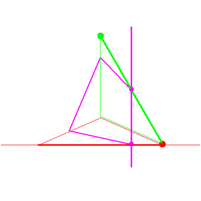
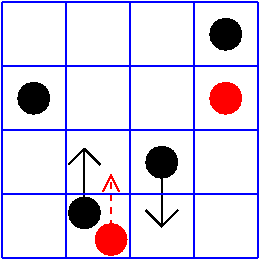

The line lying in a fixed plane in P3


The line lying in a fixed plane in P3 |
|
|  |
In the third stage of the specialization sequence, the plane rotates about the line, and nothing happens to the solution line. Note that at the end, the moving plane is spanned by the stationary line and the moving line, and so the solution line is now defined to be the intersection of the moving plane and the fixed plane, where it must lie. This is the case (yes,no) in Table2/Figure 8 of GLR. The top red checker in the critical diagonal is in the rising checker's square, but there is no red checker in the critical row. |
|  |